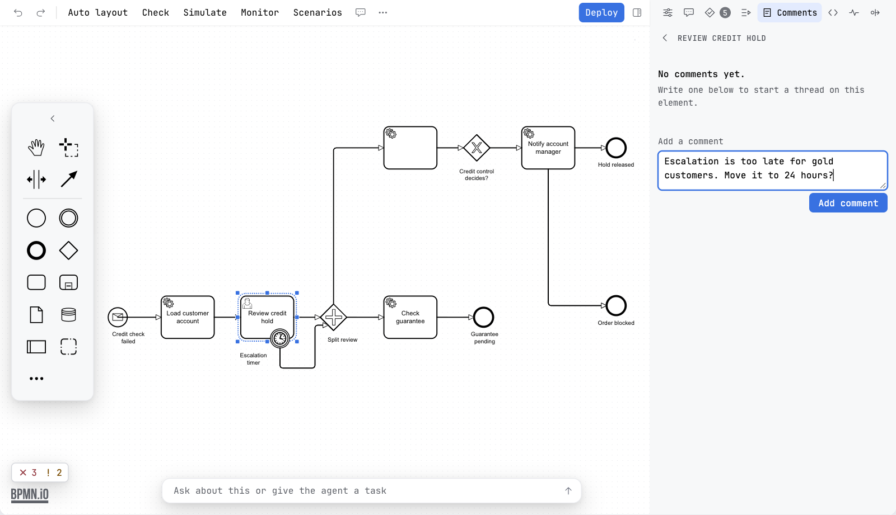
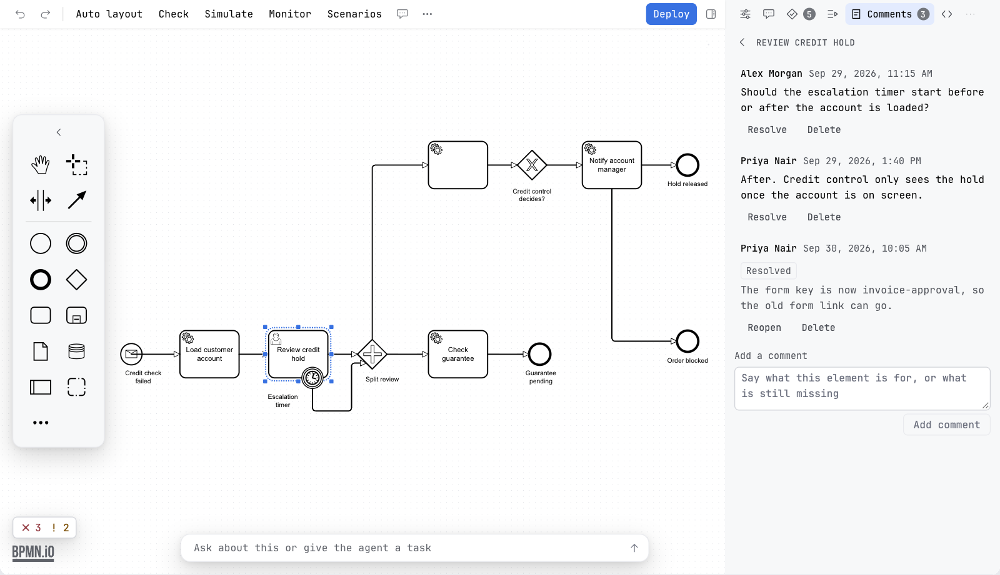
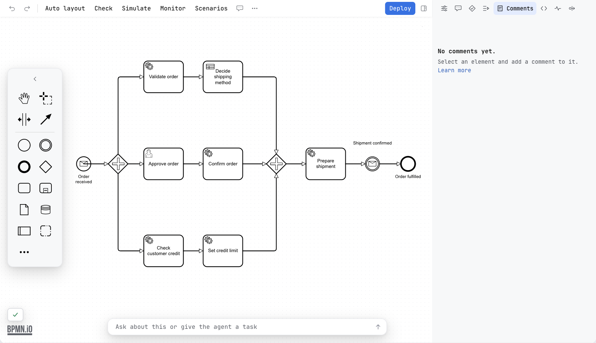
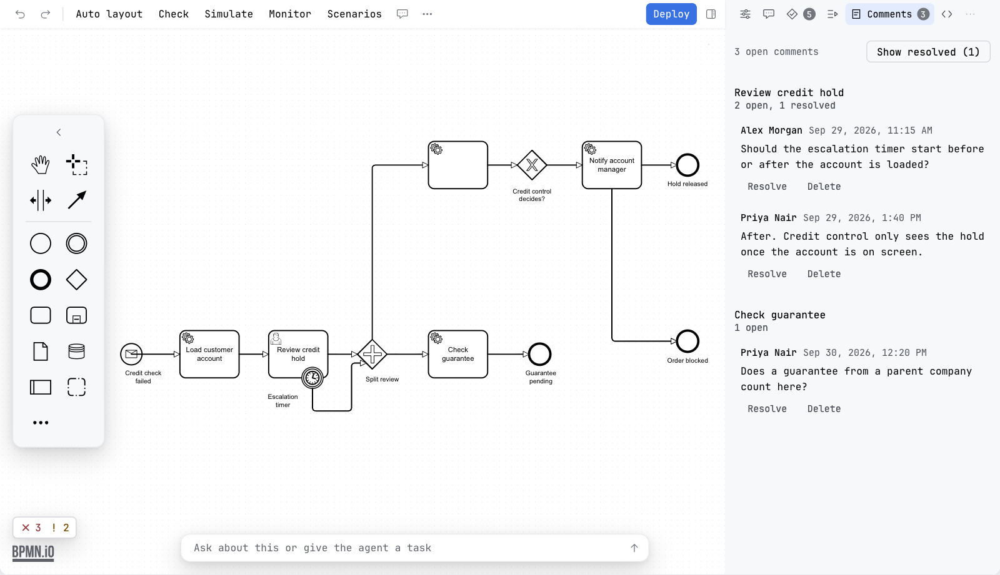
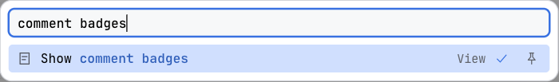

Guide / Draw and edit
Comments
Leave a comment on any element of a diagram. It is kept in the file, so it travels with the diagram through version control and nothing it says changes what the process does.
What it is
A comment is a short note on one element of a diagram: what the step is for, what is still missing, a question for the next person. Comments are free. They are kept in the diagram file itself, inside the element they belong to, so a branch, a pull request and a checkout carry them like any other change to the diagram.
Comments are in the BPMN editor. A decision and a form have no Comments tab.
Add a comment
- Select an element on the canvas.
- Open the Comments tab of the sidebar. It shows the thread of that element under the element's name.
- Type in the field Add a comment. The line under it says who signs the comment: Signed and your name, or without a name.
- Press Add comment. The button stays off until there is text.
The name is the one your version control has for the project. You can leave the name empty, and the comment is then shown as Anonymous. Each comment shows who wrote it and when.

Work with a comment
| Edit | Changes the text, with Save and Cancel. It is offered only on a comment that is yours, that is one signed with your name. |
| Resolve | Marks the comment as dealt with. A resolved comment is labelled Resolved and stops counting as open. |
| Reopen | Takes a resolved comment back to open. |
| Delete | Removes the comment from the file. |
Adding, editing, resolving, reopening and deleting a comment are each one step of Undo, like any other change to the diagram.

The list of the whole diagram
With nothing selected, the Comments tab lists every element of the diagram that has a comment, the open ones first. Each element shows its thread, and the line above it counts what is still open, for example 2 open comments.
- Click an element's name to bring it into view on the canvas.
- Resolved comments are hidden. Show resolved brings them back, with their count, and the same button then says Hide resolved.
- Select an element and the tab shows only its thread, with a ‹ back to the list.
- With no comment at all the tab says No comments yet. and Select an element and add a comment to it.

A label, and anything that is not a BPMN element, cannot take comments. The tab says so when you select one.

The badges on the canvas
A small number on the corner of an element says how many comments on it are still open. Click it and the Comments tab opens on that element. The Comments tab itself carries the number of open comments in the whole diagram.
Show comment badges in the More menu, under View, turns the numbers on the canvas off and on. It changes only what you see. The comments stay in the file. Comments are not drawn on a picture from Export.

Where they are kept
A comment is written into a penstock extension element inside the element it belongs to. Camunda Modeler and both engines ignore that element, so nothing a comment says changes how the process runs. Because it is part of the file, a comment is part of the diff in a pull request. See Files Penstock reads and writes.
The element lives in its own namespace, https://github.com/kern0x1b/penstock-release/ns/comments/1.0, with the prefix penstock. It sits in the extensionElements of the element that is commented, next to whatever else is there, for example zeebe: or camunda: content. For a task that carries one open and one resolved comment the file holds this:
<bpmn:userTask id="Activity_review" name="Review order">
<bpmn:extensionElements>
<penstock:comments>
<penstock:comment id="Comment_1" author="Ada" date="2026-09-20T09:00:00.000Z" resolved="true">Which limit applies here?</penstock:comment>
<penstock:comment id="Comment_2" author="Grace" date="2026-09-21T14:30:00.000Z">Limit is 500, see the policy page.</penstock:comment>
</penstock:comments>
</bpmn:extensionElements>
</bpmn:userTask>id | Made by the editor: Comment_ and the next free number on that element. |
author | The name of the project's version control, taken when the comment is added. Left out when there is no name. |
date | The moment the comment was added, as an ISO 8601 time in UTC. Editing the text does not change it. |
resolved | Present, as true, on a resolved comment. |
| Text | The body of the element. |
Deleting the last comment of an element removes the penstock:comments element, and the extensionElements around it when nothing else is in it.
What reads them
- The BPMN editor reads and writes them. That is the only place they are shown.
- The command line and the MCP tools do not list or change comments.
penstock checkand the other commands leave them in the file as they are. - A comment is a note for people. The engines ignore the element, so it has no effect on a run.
What you see
- The thread of the selected element in the Comments tab, with the field that adds a comment.
- A number on the corner of each element that has an open comment.
- A count on the Comments tab.
Common problems
- There is no Comments tab.
- Comments are for BPMN diagrams. A decision and a form do not have them. In a diagram, the sidebar may be hidden: press the sidebar toggle at the right of the toolbar.
- There is no Edit button on a comment.
- Edit is only on your own comments. Resolve, Reopen and Delete are on every comment.
- The numbers on the canvas are gone.
- Show comment badges is off. Turn it on in the More menu.
- "This element cannot take comments."
- The selection is a label or not a BPMN element. Select the shape or the connection itself.
- My comment does not show in the exported picture.
- Right. Comments are not drawn on a picture.